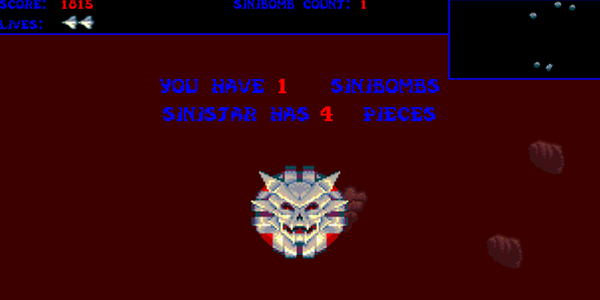

Project Description
This project involved creating a lightweight game engine utilising the SDL2 libraries that we could then create a basic version of the original Super Mario Bros in.
Project Info
Role: Programmer
Team Size: 1
Time Frame: 12 Weeks
Engine & Language: SDL2 with C++
Project Introduction
As part of my games engine creation module, the main task for our second semester was to create a lightweight game engine utilising C++ and the SDL2 Libraries. After creating the basic functionality we could then build a basic 2D platformer into the system, in this case it was a recreation of the original Super Mario Bros.
This was also the first games project I had made using C++, and as a regular user of C# at the time it was a step out of my comfort zone, but I managed to grasp the concepts well during the projects development.
Highlighted Mechanics
#1 POW Block Mechanic
In order to make the POW block mechanic work, several classes needed changing, the main one was the game screen class. I created an UpdatePowBlock function that detected if either character had collided with the tile the powblock was in, since the level map itself was set by using an integer map using 1s and 0s to determine which part of the level was collidable or not.
In this function when a collision was detected, it would call the pow block class to change sprite, perform a screen shake function - a purely cosmectic replication of the effect in the first game. Then it would call the enemies array - an array formed of the koopa class - to take damage. This function made them flip and able to be killed when walking into them with either Mario or Luigi.
#2 Collectable Coins
This mechanics was also implemented in the game screen class - this controlled the main functionality of the level, acting like a level manager to an extent. In the level setup function, there was a section for entity spawning. This wouild call a function called CreateCoin. It would take a vector2D parameter of where to place the coin. The function would then spawn a new coin class in that position of the map.
In the coin class itself, the update function had a frame delay variable that swapped the current render texture depending on the current frame cycles value. This gave the illusion of an animated spinning coin. Back in the game screen class, if a collision between a coin and character was deteced, the coin would be deleted, then it would update a score variable. Due to time constraints, the score variable was never posted to the screen
Project Reflection
Overall this project turned out well for a first try into programming games outside an engine; however it is fairly limited and I failed to implement animations for all the characters as well as a second level. This was mainly due to time constraints in balancing work for my 3 other modules. It is definetely something I could replicate better now with my expanded knowledge pool.

- 